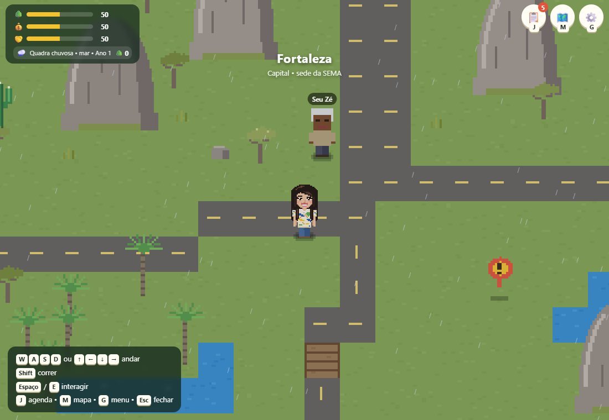
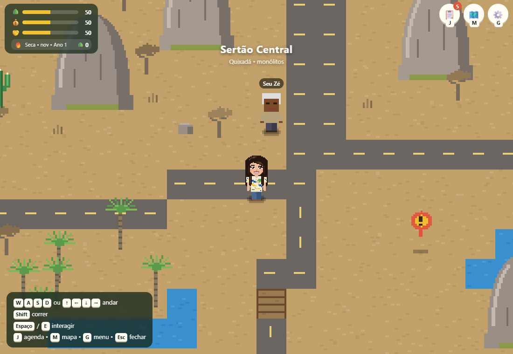
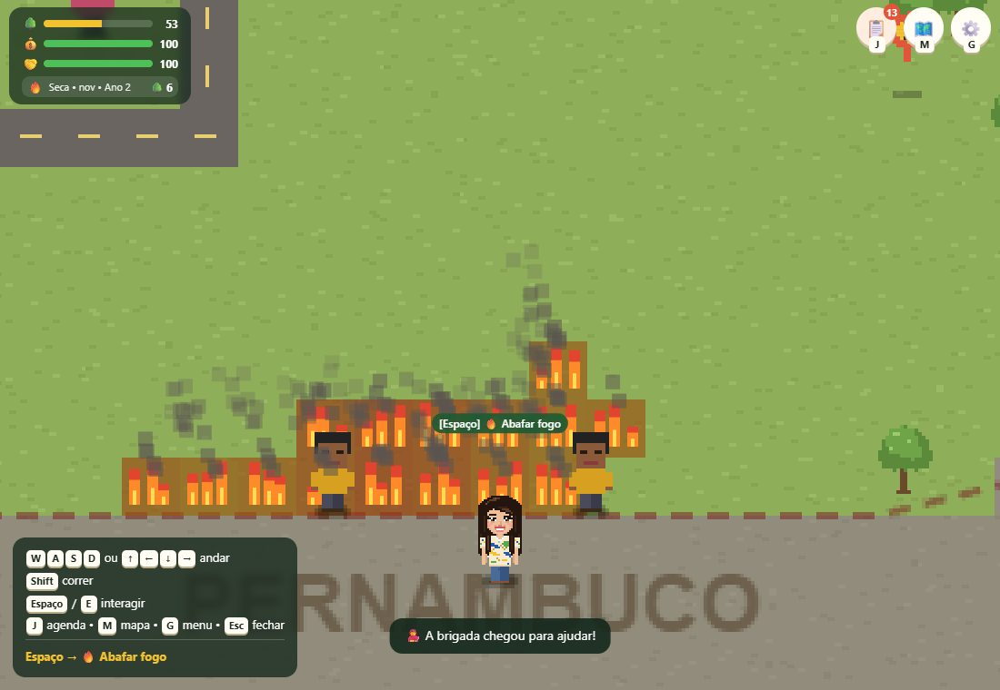
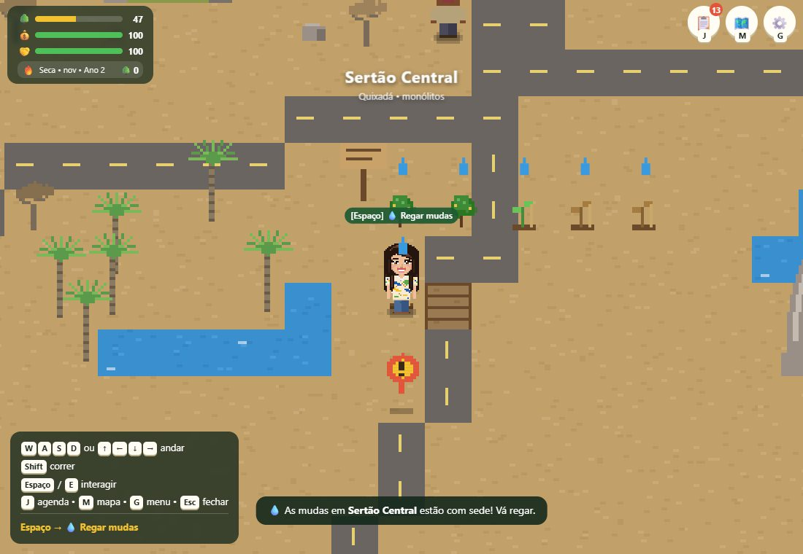
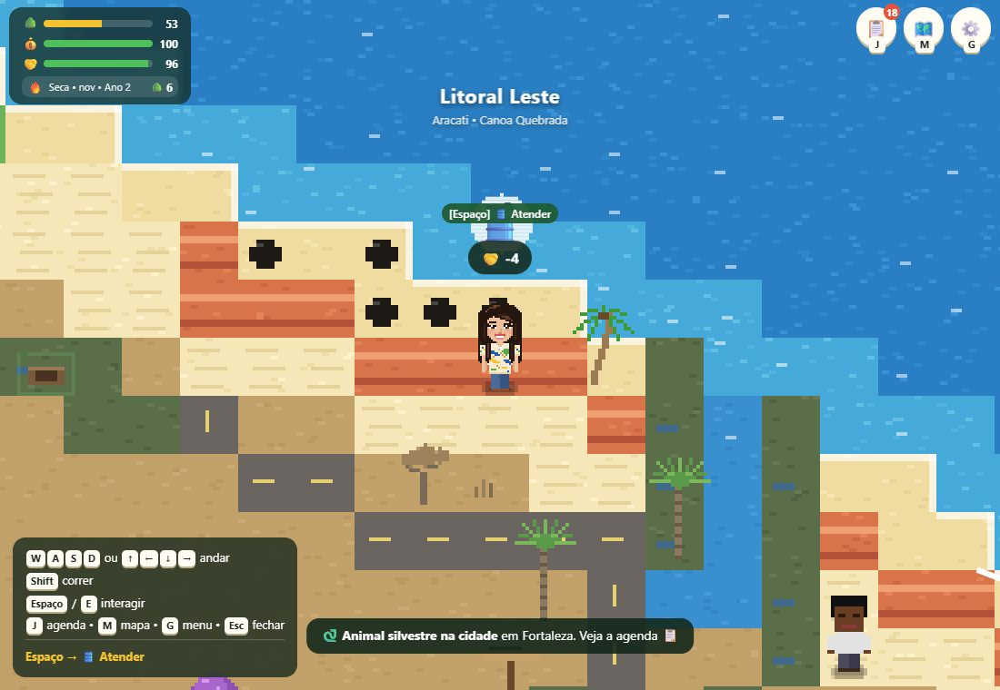
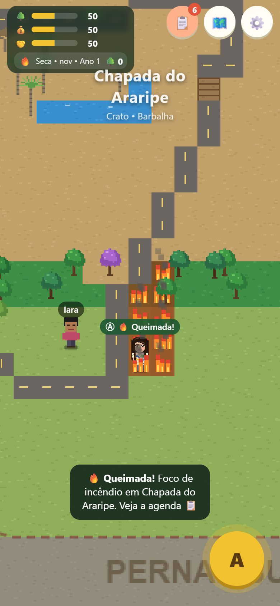
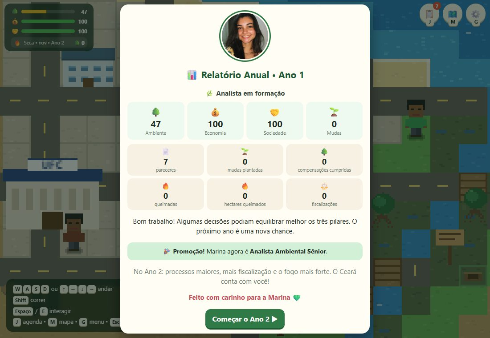

Marina, este é o seu jogo. Você é analista ambiental da SEMA e cuida do Ceará inteiro: do mangue do Cocó à Chapada do Araripe. O jogo não acaba. O estado muda com as estações de verdade, e cada decisão sua tem consequências.
🌵 Abrir o jogo💾 O jogo salva sozinho. Instalado na Tela de Início, o progresso fica guardado mesmo se você passar dias sem jogar. Para ter uma cópia extra, vá em ⚙️ e toque em Gerar código.
🚙 Na agenda, o botão Ir leva você direto para cada tarefa. Não precisa atravessar o estado a pé.
No canto da tela ficam três barras. Toda escolha mexe nelas. A economia ecológica pede que as três fiquem saudáveis ao mesmo tempo.
Embaixo das barras aparecem a estação, o mês, o seu ano de gestão e quantas árvores vivas você já tem. Toque na estação para saber como está o tempo no Ceará.
Os primeiros 7 processos formam o seu primeiro ano. Depois disso, novos pedidos de licença chegam sem parar: loteamentos, postos, pousadas, linhas de energia, cerâmicas, fazendas de camarão e muito mais, em todas as regiões do estado.
As estações do jogo seguem o mês de verdade. Jogar em março é diferente de jogar em novembro.





O Ceará não para enquanto você está fora. Ao abrir o jogo de novo, um resumo conta o que aconteceu: as mudas que cresceram, alguma queimada, se a estação mudou e o que está esperando por você. A comunidade ajuda a cuidar das mudas, então ficar uns dias fora não faz você perder tudo.

Cada ano de gestão termina com um Relatório Anual: seus indicadores, pareceres, árvores, queimadas e fiscalizações. Com o estado equilibrado, vem a promoção.
A cada ano os desafios crescem: obras maiores, fogo mais forte e empresas mais propensas a descumprir o combinado.

Fique de olho na agenda: tem uma missão especial esperando por você. É ela que abre o seu álbum de memórias.
Catedral, Theatro José de Alencar, Dragão do Mar, Praça do Ferreira, Ponte dos Ingleses (caminhe até a ponta!), Iracema, as jangadas e o Farol do Mucuripe.
Pedra Furada em Jeri, teleférico de Ubajara, a lua e estrela de Canoa Quebrada, a Galinha Choca em Quixadá, o Castanhão e o Padre Cícero em Juazeiro.
Chegue perto e toque em A: aparecem curiosidades reais. Com o álbum aberto, cada lugar vira uma lembrança no menu ⚙️.
A cada 2 pareceres assinados cai um salário. Ele vai de R$ 3.500 (Analista) a R$ 13.000 (Secretária): cada promoção aumenta o contracheque.
Vistoria fora de Fortaleza rende R$ 150 de diária. Combater uma queimada rende R$ 250.
Ao lado da SEMA: roupas, artesanato cearense (renda de bilro, chapéu de palha de carnaúba, couro do Cariri) e salão de beleza com penteados novos.
Perto da UFC: peças baratinhas e cada compra dá +1 🌳. Roupa reaproveitada é economia circular.
Toque no 👛 do painel (ou tecla V) para trocar de roupa, penteado, chapéu e óculos com o que você já comprou.
A vistoria revela coisas que o processo não conta e deixa o parecer mais forte.
Nem sempre liberar é bom, nem sempre barrar é proteger. Pense em quem ganha e em quem paga a conta.
Obra pequena não precisa do mesmo rigor de obra grande. Às vezes a melhor licença é a mais simples.
Compensação é com espécie nativa do lugar. Exótica bonita não conta e ainda tira pontos.
Quando a agenda piscar, largue o que estiver fazendo. Quanto antes você chega, menos queima.
De agosto a dezembro, passe pelas áreas de plantio de tempos em tempos. Árvore viva é o que vale.
Ajudar comunidades a se prepararem diminui as queimadas na região delas.
Moradores, pesquisadores, bombeiros e a Profa. Iracema na UFC dão dicas e curiosidades do Ceará.
Ela organiza tudo e leva você de viatura a cada tarefa.
Em março o sertão está verde e cheio de água. Vale ver o mesmo lugar em épocas diferentes.